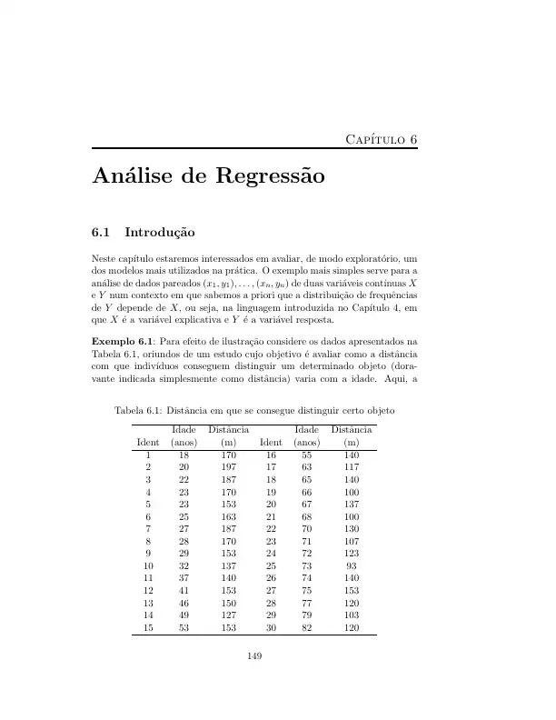

url_pdf <- "https://curso-r.github.io/main-regressao-linear/referencias/Ci%C3%AAncia%20de%20Dados.%20Fundamentos%20e%20Aplica%C3%A7%C3%B5es.%20Vers%C3%A3o%20parcial%20preliminar.%20maio%20Pedro%20A.%20Morettin%20Julio%20M.%20Singer.pdf"{tabulizer}: PDF table to data.frame in seconds
tutorials
data cleaning
pdf
tabulizer
pdftools
How to easily extract a table from a PDF with the tabulizer::extract_tables() function
Summary
tabulizer::extract_tables("caminho/do/arquivo.pdf", pages = 153)
That’s all!! I decided to write this post because I was happy with how easy it was to bring a table from a PDF into R after CTLR+C/CTRL+V failed miserably.
A potential obstacle may be the infamous {rJava}, which {tabulizer} depends on. But on linux I ran sudo apt install default-jdk default-jre and it worked for me! I haven’t tested it on windows, but there’s this tutorial here (in Portuguese).
Task
Extract a table from a page of a pdf file. url_pdf holds the address of a PDF on the internet.
A look at the PDF page
# takes a screenshot of page 153 and saves it as a PNG image.
pdftools::pdf_convert(url_pdf, pages = 153, filenames = "pag153.png")
## Converting page 153 to pag153.png... done!
## [1] "pag153.png"# shows the PNG image.
knitr::include_graphics("pag153.webp")
Extracting the table PDF -> R
# extracts the table from the PDF (not from the PNG!)
tabela_extrida_do_pdf <- tabulizer::extract_tables(url_pdf, pages = 153)
tabela_extrida_do_pdf[[1]]
## [,1] [,2] [,3] [,4] [,5] [,6]
## [1,] "" "Idade" "Distância" "" "Idade" "Distância"
## [2,] "Ident" "(anos)" "(m)" "Ident" "(anos)" "(m)"
## [3,] "1" "18" "170" "16" "55" "140"
## [4,] "2" "20" "197" "17" "63" "117"
## [5,] "3" "22" "187" "18" "65" "140"
## [6,] "4" "23" "170" "19" "66" "100"
## [7,] "5" "23" "153" "20" "67" "137"
## [8,] "6" "25" "163" "21" "68" "100"
## [9,] "7" "27" "187" "22" "70" "130"
## [10,] "8" "28" "170" "23" "71" "107"
## [11,] "9" "29" "153" "24" "72" "123"
## [12,] "10" "32" "137" "25" "73" "93"
## [13,] "11" "37" "140" "26" "74" "140"
## [14,] "12" "41" "153" "27" "75" "153"
## [15,] "13" "46" "150" "28" "77" "120"
## [16,] "14" "49" "127" "29" "79" "103"
## [17,] "15" "53" "153" "30" "82" "120"QED! ⬛
Bonus: Cleaning up the table
Once it’s inside R, it’s game on. Let’s clean it up, which is what we do best. The challenge is to stack the columns in groups of 3, Ident, (anos), (m). We have two individuals per row, and we need to stack them so that in the end we have one row per individual, by the book. The hero here is pivot_longer().
library(tidyverse)
library(janitor)
tabela_extrida_do_pdf[[1]] %>%
as_tibble(.name_repair = "unique") %>%
row_to_names(2) %>%
clean_names() %>%
pivot_longer(everything(), names_to = c(".value", "conjunto"), names_sep = "_") %>%
select(-conjunto) %>%
head() %>%
kableExtra::kable()| ident | anos | m |
|---|---|---|
| 1 | 18 | 170 |
| 16 | 55 | 140 |
| 2 | 20 | 197 |
| 17 | 63 | 117 |
| 3 | 22 | 187 |
| 18 | 65 | 140 |
Random comment
Take the chance to check out the 2020 book Ciência de dados: Fundamentos e Prática (in Portuguese) by Professors Julio Singer and Renato Morettin.
Thanks!